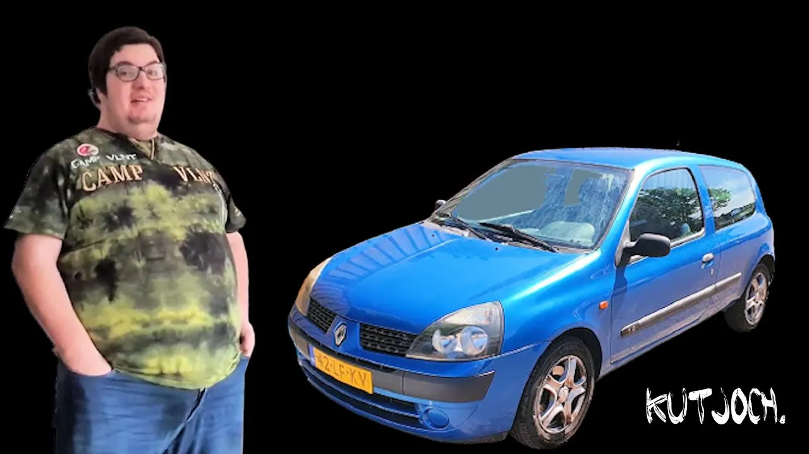
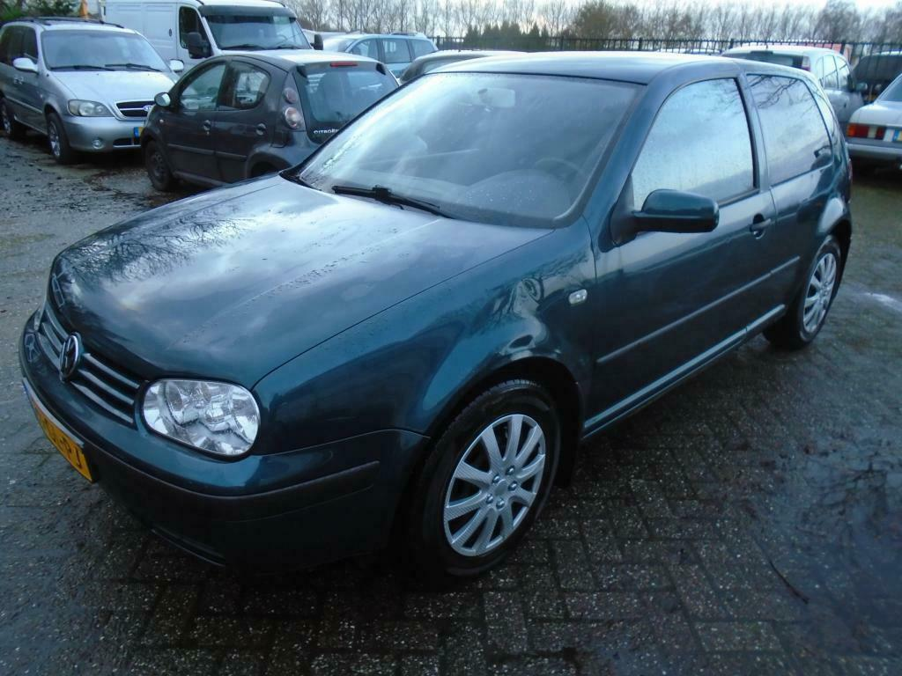
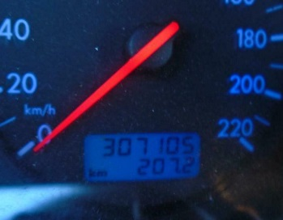

De autos van Bradge
Op deze pagina een selectie van de autos die door de Braadslee zijn opgereden, waarbij van onderhoud geen of nauwelijks sprake was.
De bimmer
Dikke BMW!

De Clio
De Corsa
AutoWeek heeft hier een prachtige reportage over gemaakt, met een niet verrassende conclusie:
De Golf
 Met automatic climate control:
Heeft het ongeveer een maand volgehouden.
De Ka
Een auto die niet gebouwd is op het voortzeulen van een kwart van het ledig gewicht linksvoorin. Probeer het lachen in te houden mocht je dit scheefhangende boodschappenkarretje zien rijden.